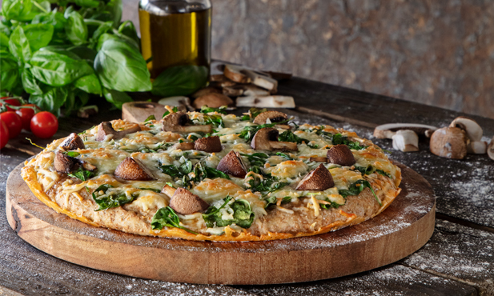

Tempere o frango com sumo de dois limões, o pimentão-doce, metade do sal e um pouco de pimenta e coloque-o num tabuleiro de forno.
À volta, disponha as batatas cortadas ao meio, rodelas do restante limão e o tomate com a rama e tempere tudo com o restante sal e um pouco de pimenta.
Regue com o azeite e leve ao forno cerca de 30 minutos, regando com um pouco de água sempre que necessário. Antes de retirar, adicione as azeitonas e leve ao forno mais 2 minutos.
Tempo: 35 min.
Dificuldade: Fácil

Pizza de massa integral com cogumelos
Ingredientes:
1 base de pizza integral
200 g queijo mozzarella
100 g espinafres
100 g cogumelos portobello pequenos
1 c. de chá sal
qb pimenta-preta
Preparação:
Pré-aqueça o forno a 200º C.
Utilize a base de pizza integral.
Espalhe parte do queijo por cima da massa, em seguida os espinafres, mais queijo, mais espinafres e queijo.
Termine com os cogumelos partidos em quartos.
Polvilhe com sal, pimenta, e leve ao forno a 200º C por cerca de 15 minutos.